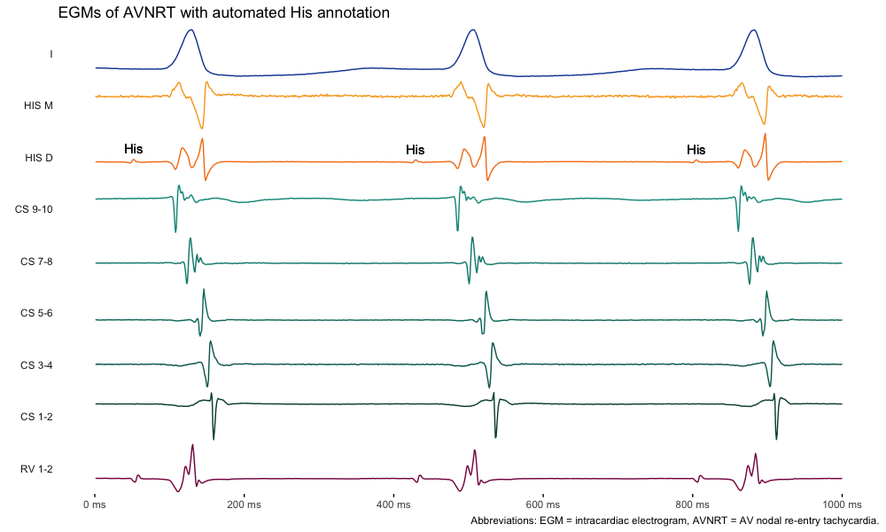
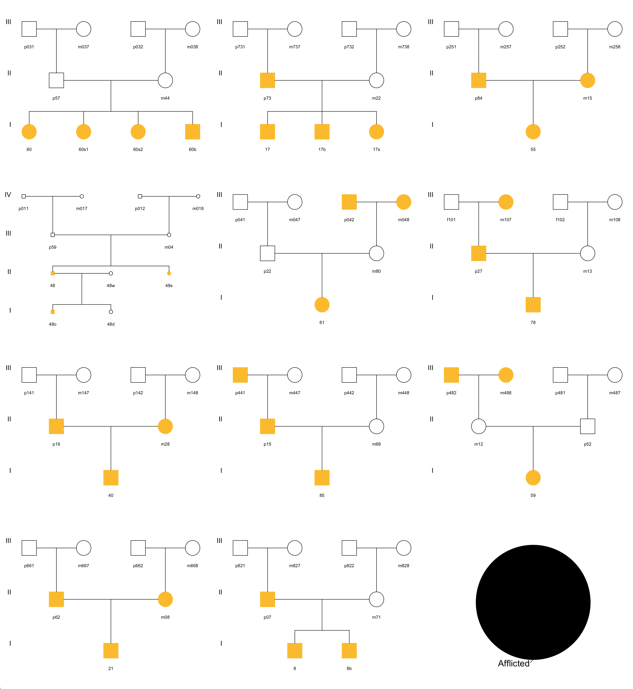
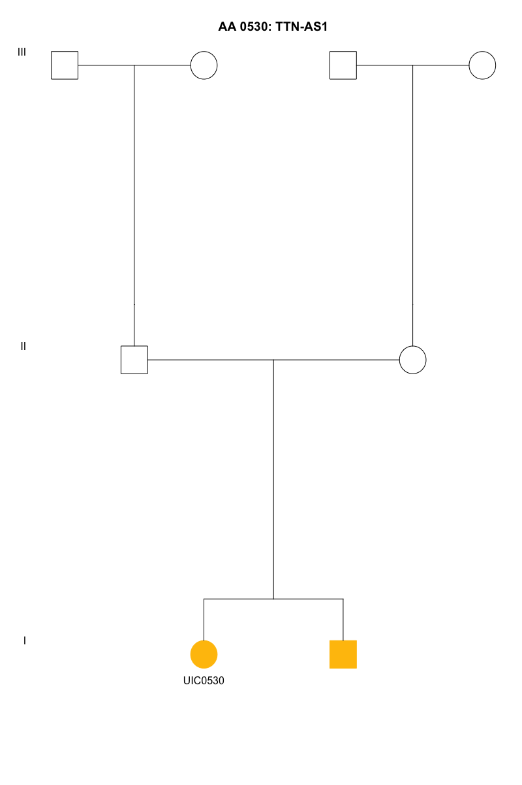
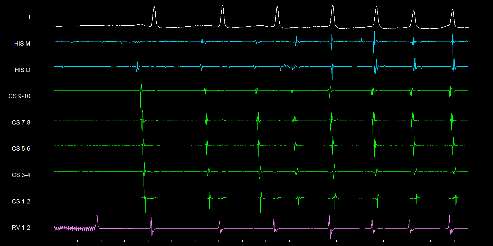

| Task | Deadline | |
|---|---|---|
| Arrhythmia (8.9%) | ||
| Atrial Flutter and Family History | Manuscript submitted to JACC EP | 2023-06-01 |
| K23 | Mentorship committee meeting | 2023-06-01 |
| K23 | Revisions to aims | 2023-05-13 |
| Computational (17%) | ||
| Cardiovascular Biorepository | CCTS data request pending | 2023-05-12 |
| Cardiovascular Biorepository | CCTS data analysis: demographics completed, unstructured text in progress | 2023-06-01 |
| Cardiovascular Biorepository | Collection and processing of ECG data from 2010 to 2023 | 2023-05-20 |
| Rhythm Analysis | HRx abstract submitted | 2023-05-08 |
| Rhythm Analysis | Interval detection and peak analysis | 2023-08-01 |
| Rhythm Analysis | Evaluate morphology in hierarchical clustering approach (Bhaumik) | 2023-07-01 |
| Rhythm Analysis | EGM conversion and ECG conversion to WFDB | 2023-05-20 |
| Clinical (49%) | ||
| Clinic | Heart Failure Clinic | 2023-06-30 |
| Clinic | JBVA FIT Clinic | 2023-06-30 |
| Academics (4.5%) | ||
| Electrophysiology | Complete application (LOR, PS) and identify appropriate training programs | 2023-07-05 |
| General Cardiology | Echocardiography boards | 2023-07-18 |
| Epidemiology (16%) | ||
| HRV and CV Mortality | Manuscript submission to European Heart Journal | 2023-06-09 |
Research-In-Progress
Anish Sanjay Shah, MD/MS
Cardiology Fellow
University of Illinois at Chicago
Cardiology Fellow
University of Illinois at Chicago
June 5, 2023
Aims Updates
- Pending mentorship meeting (dates requested for Alvaro, Amit, Dawood)
- Met with Lampert - be much more specific in ANS factors in pAF
- Evaluate ECG during AF: coarse AF v. fine AF → triggering event (ADHF, surgery, etc…)
- Evaluate ECG during sinus: P wave morphology/area/dispersion and AF burden
- Evaluate candidate genes (ANS neurohormonal pathways) in Emory Cohort (which has high vagolysis burden) as initial study; validate these genes in AF registry with burden/rate of AF progression
AF Phenotyping
- Pending CCTS to upload data (hundreds of GB in size)
- Complete setting up cluster computational pipeline for NLP of unstructured text
- Specific goal is to identify timepoints: onset of AF, transition to persistent AF
- Initiate analysis of ECG data
- Convert to annotation format (WFDB)
- Identify median P waves per ECG
May 22, 2023
ECG analysis
K23 AIM #1 is to identify paroxysmal AF into low-scar burden (and high vagolytic triggers) in AF registry.
- Have imported superset of ECGs from MUSE (~500k ECGs) in XML/binary format (including raw signal, diagnoses, timing, etc), approximately ~1 TB
- Convert XML format into digital signal… software developed (same as for HRX abstract), approximately ~250 GB
- Analysis of ECG markers: high frequency HRV, P wave dispersion, P wave terminal forces, and GEH (Wilson’s vector gradient), and if possible to identify “coarseness” of AF
- Split data into PRE/POST AF diagnosis, and identify control group from other ECGs in superset
May 12, 2023
Updates
- ECG data is being pulled from MUSE in XML format
- CCTS data pull to be completed today
- EGM signal processing - work in progress with goal of automated beat generation of multi-channel leads (R/C++ package)
- Need storage space for ECG data (raw and processed), cluster allows only 50Gb for read/write storage (batch processing): >100k ECG
- CCTS data will need raw storage space: 10 years of patient charts + notes
May 8, 2023
Goals
- Phenotyping of AF, as current grouping is inadequate. Focus on risk category changing from paroxysmal to persistent (baseline concept of multi-wavelet reentry)
- ECG- and EGM-based analysis of AF as additive components
- CARTO/Rhythmia/EnSite cardiac mapping software to determine LA scar burden
- NLP coursework, cluster set-up preparation
- HRX abstract preparation on EGM and Physionet/WFDB
- Identify next paper to start preparing
- eMERGE/AF IRB waiting on approval from eMERGE
- EPS study IRB in progress
HRx abstract
Figure 1: Automated EGM annotation of single lead, with high-fidelity signal resolution. 75% file size reduction and 500% read/write speed-up.
April 17, 2023
Goals
- Phenotyping of AF, as current grouping is inadequate. Focus on risk category changing from paroxysmal to persistent
- ECG- and EGM-based analysis of AF as additive components
- CARTO/Rhythmia/EnSite cardiac mapping software to determine LA scar burden
- AFL/FH manuscript submission
- HRV/CVD manuscript revisions
- Identify next paper to start preparing
- eMERGE/AF IRB
- EPS study IRB
- NLP coursework, cluster set-up preparation
- HRX abstract preparation on EGM and Physionet/WFDB
April 10, 2023
AF Ontology
Generation of key features that are related to arrhythmias:
- Clinical history and trajectory
- Echocardiographic findings
- ECG-based features
- Family and social history
- Potential genetic markers
Figure 2: Example from HF evaluation and progression
Figure 3: Utilizing patient features to create a matrix-based cluster
Figure 4: Support-vector based clustering, multidimensional K-clustering in feature-space
Phenotype-based WES cohort
| Age | Comorbidities | Proportion |
|---|---|---|
| - | none | 10-15% |
| ≤ 55 | * | 20% |
| ≤ 65 | ≤ 1 | 20% |
| ≤ 65 | ≤ 2 | 10% |
| ≤ 65 | ≤ 3 | 10% |
| ≥ 65 | ≤ 1 | 10-15% |
Alternatively can aim for two major groups within paroxysmal cohort definition:
- ≤ 65y + structural heart disease (70%)
- ≤ 65y - structural heart disease (30%)
Aim for 20-30% to have had PVI to be able to integrate intracardiac findings.
Autonomic inflexibility and CV mortality in HF and LF bands
Improved model concordance with addition of autonomic inflexiblity
March 31, 2023
AF Phenotyping
NLP combined with DSP can help in identifying sub-phenotypes of AF…
- Polygenic risk score assessment based on phenotypes and sub-phenotypes
- Current phenotype approaches limited to structured text
- Unstructured data can be extracted from clinical notes using NLP tools: BERT, Sci/RoBERTa, meta mapper, etc
AWS HPC + CCTS data + AF registry + EP lab + biomarkers
Figure 5: Complexity of phenotyping is based on how structured or unstructured the data may be
Figure 6: Identifying a true phenotype is complex and most often incorrect unless corroborated through other mechanisms
Figure 7: Phenotypke KB current standard for diagnoses of AF
EPS signal processing
Utilize combination of surface ECG and intracardiac EGM to…
- Identify intracardiac features, e.g. multichannel morphologies
- Evaluate atrial abnormalities, such as conduction left → right activation
- Feed features into LSTM or convolutional neural network to understand different AF phenotypes
Figure 8: Annotated ECG to identify P wave, QRS, and T wave fiducial points
- Summation of P wave force vectors across surface ECG (signal-averaged)
- Identify terminal P wave force abnormalities
- Evaluate changes in P wave morphology over time
March 20, 2023
Updates
- AFL/FH:
- manuscript was sent for initial revisions (03/03/23)
- feedback received on 03/17/23 from Jordan
- second draft to be returned on 3/20/23
- Aim 1: “Big data” approach using claims-based data, IRB/CCTS approval obtained
- NLP/ML area of focus will be initially on AF (only performed x 1)
- Approach for recurrent events, Weibull distribution expected
- HRV/CVD :
- priority for this week
- HF/LF HRV values showing >10 fold HR for bottom versus top quartile (with almost >95% sensitivity)
- Genetic analysis:
- ACER will start AWS workspace this week
Help Wanted
- Ablation database: working with Wissner to revise ablation database
- manual data reconciliation
- OCR/OMR-based PDF conversion approach
- ablation outcomes x genetics
- AF phenotyping: key part of Aim 1
- Computational Biorepository for Cardiovascular Disease: CCTS data pull active, all clinical notes, data points, etc since 2010 on CVD
- AF ontology needed using a NLP/LLM (e.g. BERT)
- NLP/ML for EHR data:
- CBCD: overlap of DCM/AF registries, CCTS data pull of all clinical notes since 2010 on CVD
- Key part of Aim 1 is to identify AF phenotypes in those with paroxysmal AF
- AF Ontology: working with Andrew Boyd on AF-NLP framework (SciB)
February 27, 2023
Updates
- AFL/FH: will need age of diagnosis of event of family history prior to final analyses
- CAR: analysis pending by Konda, however unclear if we can strongly accept null-hypothesis
Non-linearity in ANS dysfunction
- Proportional hazard assumptions
- Defined using time-variance, time-interaction, Martingale residuals
- Satisfied PH assumptions
- Non-linearity of HRV and CV mortality
- Spline analysis with up to 5 knots
- Parametric threshold analysis (survival modeling)
- Non-parametric (binary outcome) threshold analysis
- Identified non-linearity of response
- Re-analyzed data using cut-point (as shown in Figure 9)
- Almost 100% accuracy in classifier of low-risk cohort
- Almost 10-fold hazard in identify high-risk cohort
Figure 9: Increase of ~10 fold in CV mortality in 1/4 patients identified by abnormal resting and reactive vagal tone. Robust classifier of resilience.
Genetic analysis
- WES-generated VCF files on n=28 patients from EO-AFL + FH subgroup
- Due to size limitations (no access to HPC) converted VCF data …
- VCF to Apache Arrow
- Arrow conversion to
featherand toparquetfor header, annotation, and columnar genotype data - Analyze as in-memory array
- Re-vert to ASCII-based format for GZip formated VCF
- Filtering of data
- Limited to coding regions
- Filtered for read depth > 20
- Compared to dbSNP builds using
SIFTandPolyPhen - Pending further annotations based on arrhythmia-panels
Specific aims
Have revised aims, and have drafted the x1 page specific aims to be shared with mentors.
Mentors: D Darbar, AJ Shah, A Alonso, M McCauley, A Boyd
February 20, 2023
AFL/FH
- Genetic basis for FH may be more promising than association with FH broadly, but would require additional WES to be sent
- Would need to repeat VCF analysis for an arrhythmia panel (instead of cardiomyopathy panel)
CBCD
Computational biorepository for cardiovascular disease
- Will need a large computational biorepository
- Claims data from both CPT/ICD codes
- Clinical documentation (raw text from clinical notes)
- Medication history
- Study data e.g. XML of ECG, echo reports, coronary angiograms, device interrogations, etc
- CCTS to pull data, DRA to be submitted today
February 6, 2023
Updates
- AFL/FH: WES needed prior to completing revisions
- ARIC: potential option to pursue genetic profiling in ARIC per Alvaro, need formal proposal
- K23: drafting specific aims in 1-pager format
- VCF: data able to be analyzed/cleaned, however requires more CPU to perform
Figure 10: Chromosome 1 summary
January 9, 2023
Updates
AFL/FH:
- Pedigrees/genetics completed (thanks to Ana, Shashank, Mike)
- Outline/draft to be re-written
- HRV/CV Mortality paper rejected, need to re-think strategy with senior authors
- K23 aims to include 1) EP lab as translational component, 2) arrhythmia risk prediction as computational component
NULLNULLNULLNULLAFL/genetics
- ~87 individuals with +FH
- ~81 individuals with WES
- ~18 individuals with VUS in total
- 1 individual with VUS + FH

NULL
NULLDecember 19, 2022
Updates
AFL/FH:
- Pedigrees TBD
- Draft completed, pending feedback
- Supplemental tables needed?
AF/Recurrence:
- Scott added additional patients from UIC (September 2020 to now)
- Data collection pending
K23 Aims
Objective: Clinical EP researcher using computational neurocardiology techniques to study arrhythmia mechanisms
- Evaluating vagolysis and its effect on triggered arrhythmia mechanisms, both ventricular (e.g. SCD) and atrial (triggered AF)
- Using computational approach to phenotype triggered onset arrhythmias, e.g. atrial fibrillation
Mentorship Team: Amit J. Shah, Dawood Darbar, Rachel Lampert, Viola Vaccarino, Mark McCauley, Andrew Boyd, Alvaro Alonso
K23 Approach
Vagal tone and triggered arrhythmias
- Manuscript on stress-induced vagolysis and CV mortality under review
- ANS dysfunction during/with ischemia work-in-progress
- [Create murine/translational model for vagolysis and triggered arrhythmias]{.arrhythmia[2]}
Arrhythmia phenotyping
- AFL/FH manuscript work-in-progress
- AF/race project work-in-progress
- [Classification of arrhythmia phenotypes using large data set (MVP/VA research data, UIC, ARIC)]{.computational[3]}
Murine Model of Vagolysis
- Atria are heavily innervated by ANS ganglia
- Sympathovagal balance locally mediated through adrenergic lysis of cholinergic activity
- Neuropeptide Y (NPY) causes cholinergic inhibition through Y2R
- Pro-arrhythmic murine model (compared to healthy controls)
- Ex-vivo vagal-sparing Langendorf preparation
- Catecholamine infusion and NPY Y2R antagonists to modulate arrhythmic state
- Measure atrial conductive properties as outcome
- Baseline, with catecholamine infusion, VNS stimulation, and Y2R antagonism
December 12, 2022
AF Catheter Ablation and Recurrence
Data/power increase:
- Inclusion of VA data
- Additional data pull from EPIC by Scott Uphouse (pending)
- Inclusion of UIC billing code data?
Atrial Flutter and Family History
Pedigrees:
- How should these be incorporated into the manuscript?
Genetics:
- 305 patients that have undergone whole exome sequencing, but unclear how to match these to the AFL data
- Should we genotype the rest of the EO-AFL patients?
ECG/EGM analysis
November 21, 2022
Updates
- AHA IPA: Completed draft, pending revisions
- AFL Paper: Draft to be done by Wednesday
- AF Ablation + Biorepository: Pending IRB
- Stress and CVD Mortality: Submitted to Circulation, revisions Pending
November 14, 2022
Early Onset Atrial Flutter
- Draft of paper expanded to include results
- Prominent findings of family history and association with arrhythmia
- Key tables and figures established
Table: Cohort Descriptions
| Population characteristics by onset of atrial flutter | |||
| Characteristics | Overall, N = 9211 | EO-AFL, N = 2401 | LO-AFL, N = 6811 |
|---|---|---|---|
| Age (years) | 67 (14) | 58 (12) | 71 (13) |
| Male | 560 (61%) | 146 (61%) | 414 (61%) |
| Race | |||
| Asian | 25 (2.7%) | 5 (2.1%) | 20 (2.9%) |
| Black | 477 (52%) | 154 (64%) | 323 (47%) |
| Hispanic/Latinx | 145 (16%) | 26 (11%) | 119 (17%) |
| Unknown/Mixed | 72 (7.8%) | 21 (8.8%) | 51 (7.5%) |
| White | 202 (22%) | 34 (14%) | 168 (25%) |
| Family History of Arrhythmias | 87 (9.6%) | 31 (13%) | 56 (8.3%) |
| Smoker | 365 (41%) | 101 (44%) | 264 (40%) |
| ETOH Abuse | 248 (28%) | 79 (35%) | 169 (26%) |
| BMI (kg/m^2) | 30 (25, 36) | 32 (27, 38) | 29 (25, 36) |
| Diabetes Mellitus | 368 (40%) | 98 (42%) | 270 (40%) |
| Hypertension | 740 (81%) | 183 (78%) | 557 (82%) |
| Coronary Artery Disease | 220 (24%) | 52 (22%) | 168 (25%) |
| Obstructive Sleep Apnea | 170 (19%) | 54 (23%) | 116 (17%) |
| Cerebrovascular Disease | 122 (13%) | 24 (10%) | 98 (14%) |
| Peripheral Vascular Disease | 52 (5.7%) | 13 (5.5%) | 39 (5.8%) |
| Heart Failure with Reduced Ejection Fraction | 327 (37%) | 92 (41%) | 235 (36%) |
| Bolded cells show significant difference between groups. EO-AFL = early onset atrial flutter; LO-AFL = late-onset atrial flutter. | |||
| 1 Mean (SD); n (%); Median (IQR) | |||
Table: Unadjusted Risk
Table: Risk by Family History
| Individual predictors of early-onset atrial flutter stratified by family history | ||||
| Covariates | No Family History of Arrhythmias | Postive Family History of Arrhythmias | ||
|---|---|---|---|---|
| Odds Ratio (95% CI) | Observations | Odds Ratio (95% CI) | Observations | |
| Male | 0.97 (0.70, 1.34) | 822 | 1.12 (0.46, 2.74) | 87 |
| Black Race | 2.16 (1.56, 3.02) | 822 | 1.45 (0.60, 3.53) | 87 |
| Smoker | 1.16 (0.83, 1.60) | 790 | 1.02 (0.41, 2.50) | 86 |
| ETOH Abuse | 1.64 (1.15, 2.33) | 780 | 0.70 (0.26, 1.77) | 85 |
| BMI (SD) | 1.24 (1.06, 1.44) | 801 | 1.61 (0.99, 2.69) | 85 |
| Diabetes Mellitus | 0.99 (0.71, 1.37) | 815 | 1.98 (0.81, 4.92) | 87 |
| Hypertension | 0.74 (0.51, 1.10) | 816 | 0.49 (0.15, 1.58) | 87 |
| Obstructive Sleep Apnea | 1.32 (0.88, 1.96) | 814 | 2.09 (0.72, 6.09) | 86 |
| Beta or Calcium Channel Blockers | 0.39 (0.22, 0.64) | 822 | 1.23 (0.29, 4.70) | 87 |
| Heart Failure with Reduced Ejection Fraction | 1.29 (0.93, 1.80) | 791 | 0.96 (0.35, 2.49) | 85 |
| Each model expresses an unadjusted odds ratio (95% CI) for having early-onset atrial flutter, in those labeled with and without positive family history for atrial arrhythmias or related diseases. | ||||
Table: Fully Adjusted Model
| Association of family history with early-onset atrial flutter | |
| Covariates | Odds Ratio (95% CI) |
|---|---|
| Family History of Arrhythmias | 1.82 (1.08, 3.03) |
| Male | 0.91 (0.64, 1.30) |
| Black Race | 2.12 (1.50, 3.01) |
| Smoker | 0.98 (0.69, 1.38) |
| ETOH Abuse | 1.38 (0.95, 2.00) |
| BMI (SD) | 1.15 (0.97, 1.37) |
| Diabetes Mellitus | 1.25 (0.87, 1.79) |
| Hypertension | 0.55 (0.36, 0.85) |
| Obstructive Sleep Apnea | 1.21 (0.77, 1.88) |
| Beta or Calcium Channel Blockers | 0.46 (0.27, 0.77) |
| Heart Failure with Reduced Ejection Fraction | 1.16 (0.81, 1.64) |
| Each covariate expresses an adjusted odds ratio (95% CI) for having Early Onset Atrial Flutter. All terms were included in the model. | |
Table: Grouped Forest Plots
NULLNext steps:
- Find agreement in key results and figures
- Identify main finding
- Complete discussion section
October 10, 2022
AF Registry
Status:
- Current overview
- Not yet powered
- Will need to revise out approach
October 2, 2022
AF Registry
- Current number: 219
- Recurrence rate: 46%
- Death = 12
- MACE = 70 (including repeats)

GIS-based MAP of right atrium for mapping and localization purposes for publications.
September 26, 2022
AF Registry
Analysis
- Genetic analysis in PLINK complete
- Models are set up for analysis once data intake is done
Status
- Have n = 238 currently
- Reviewed 95 charts thus far (CAR team)
- Of n = 108, 75 have had recurrence, 33 without (rate of about 70% of anyarrhythmia)
- Of ECG based confirmation, 43 AF recurrence events (53%)
September 12, 2022
AF Registry
REDCap data dictionary is finalized. Next steps are:
- Data entry for outcomes
- Finalization of new patients to add from AF ablation registry
Genetics
Currently able to:
- Format large SNP data sets into appropriate tables
- Utilize
PLINKandMERLINto process Chen’s genetics data - Run from R to help analyze findings
Next steps:
- Confirm ancestry (for practice) percent likelihood
- Then, once outcome data is complete, analyze differences by race
Analytical methods:
- Time to binary outcome of recurrence
- Recurrent event analysis for AF recurrence
- Can revise with Bayesian modeling in
STANas well
August 22, 2022
AF Registry
Status
- REDCap is in progress
- Have an additional list of registry patients that may/may not have had ablation
Next Steps
- Complete 100 REDCap patients
- Identify 300 patients that have potentially had ablation
CARTO Maps
- Ablation quantification
- Activation mapping
- EGM annotation
- Voltage mapping
- Conduction velocity
- Earliest/latest activation
- Geometry data
August 15, 2022
UIC-wide data summary
- N ~ XXX had ablation
- Date range from >= 2010
AF registry data
- N=~300 had ablation
- Date range from >= 2010
Next Steps
- Generate list of MRN for data collection
- Use new REDCap to obtain ECG/ablation data
- Run preliminary analysis on first 100 patients
- Consider expansion to JBVA/ACMC data
August 1, 2022
AF Registry
Consider additional variables:
- Recurrent events and adjudication (HF, cardiac admission, MACE)
- Holter/ECG data and repeat collection (P-wave morphology, Wilson’s vector gradient, amplitude of AF waves “coarseness”)
Will check with the MESA and ARIC data base on how repeat events were defined.
Murine EP Studies

Human EP Studies

July 25, 2022
Forest Plots
A simple way to make sub-group analysis Forest plots, working on improving customization.
July 18, 2022
AF Registry
The AF registry is described here. Current issues:
- Data quality - consistency between reviewers
- Missingness - decisions on acceptable thresholds
- Variable selection - echo findings, EP studies, medications, labs, symptoms
- Management - REDCap, shared excel sheet
- Adjudication/review - outcomes, clinical follow-up length
Epidemiology, Arrhythmia, Clinical, Computational